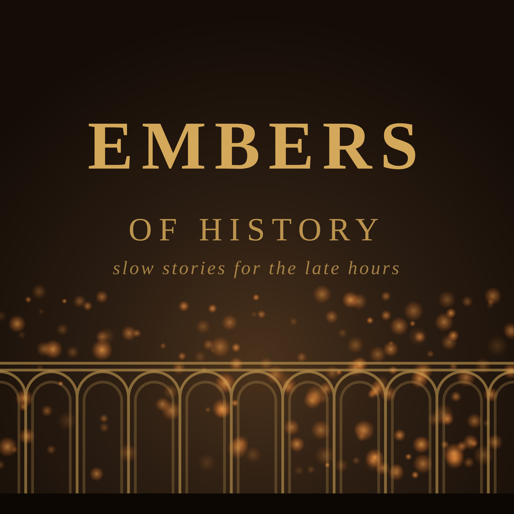
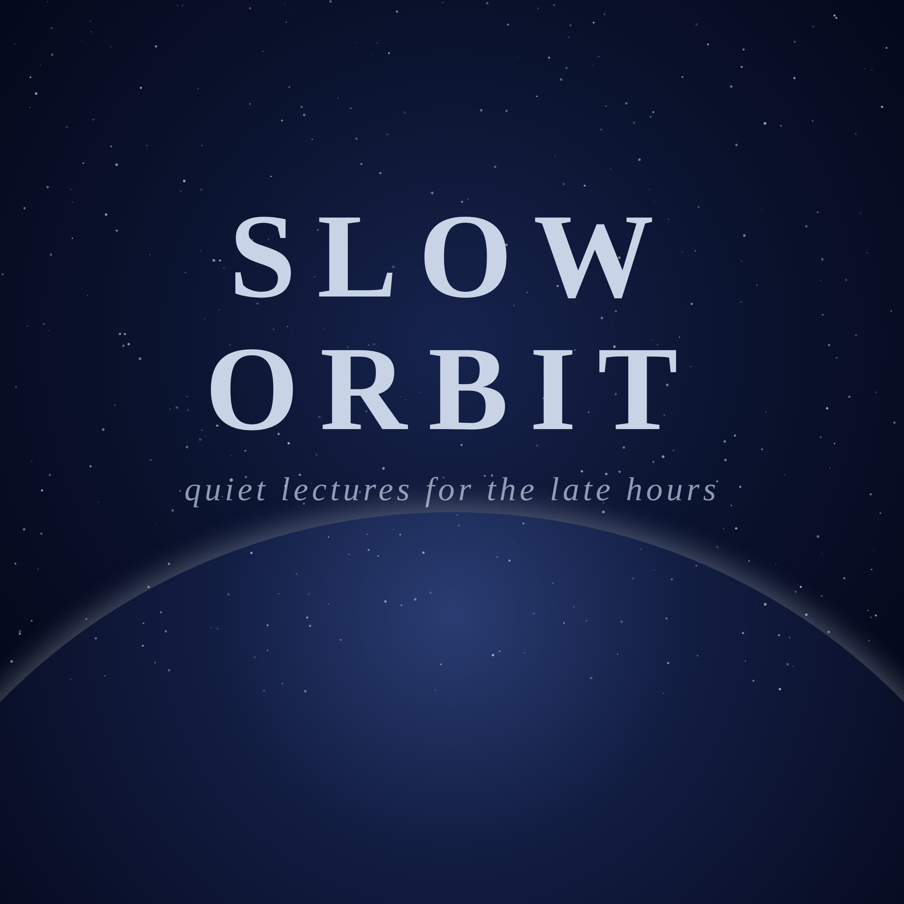

Late Hours
Calm podcasts for the late hours.

Embers of HistorySlow walks through ordinary days in the past: cities, crafts, journeys and the people who lived them, and the old battles told quietly from a distance. Calm history stories for the late hours, to fall asleep to.

Slow OrbitSlow, quiet lectures about the planets, the moons, the stars and the space between them, told calmly for the late hours. Space documentaries to fall asleep to.
 The Quiet Armoury
The Quiet ArmourySwords and armour through history, told slowly: how each one was made, why it changed, and the people who carried it. Calm history for the late hours, to fall asleep to.
 Myth and Score
Myth and ScoreThe most famous stories about great composers, held up to the light: what the letters, records and music actually say. Some turn out true, some half true, some pure legend. Told calmly, at length.